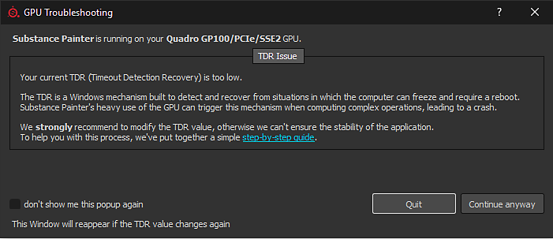
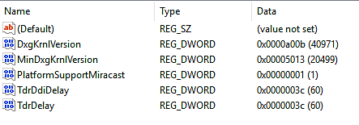
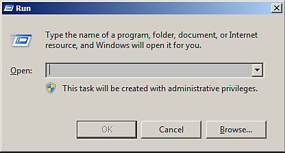
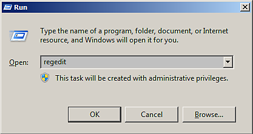
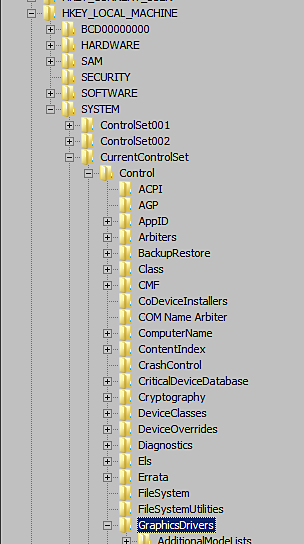
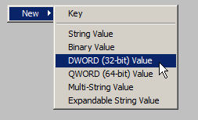
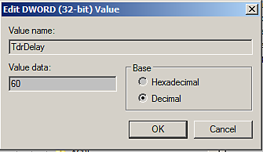

On Windows, this window will appear if Substance 3D Painter detects that the current TDR value is below a specific limit (10 seconds).
In order to prevent any rendering or GPU computation from locking up the system, the Windows operating system kills the GPU driver whenever a rendering takes more than a few seconds. When the driver is killed, the application using it crashes automatically. It is not possible to know how long a rendering task or a computation may take (it depends on the GPU, the drivers, the OS, the mesh size, the texture size, etc.), therefore it is not possible to put a limit on how much the computer should process and avoid the crash from the application level.
On Windows there is a registry key specifying how long the OS should wait before killing the GPU driver. Application are not authorized to modify this setting directly, this procedure has to be done manually (see below).
For more information consult the official documentation: https://docs.microsoft.com/en-us/windows-hardware/drivers/display/tdr-registry-keys.
To adjust the TDR simply increase the TDR Delay: change both TdrDelay and TdrDdiDelay to a higher value (like 60 seconds).

Follow this procedure to change the TDR value.
Note that two different keys will have to be created/edited.
Please note that editing the registry can have serious, unexpected consequences that can prevent the system from starting and may require to reinstall the whole operating system if you are unsure of how to modify it. The registry keys mentioned in this page shouldn't create these kind of issues however.
Adobe take no responsibility for any damage caused to your system by modifying the system registry.
Click on Start then Run (or press the Windows and R key). It will open the Run window.

Type regedit in the text field and press OK.

The registry window will open.
In the left pane, navigate in the tree to the GraphicsDrivers key by going into:
Computer\HKEY_LOCAL_MACHINE\SYSTEM\CurrentControlSet\Control\GraphicsDrivers
Be sure to stay on "GraphicsDrivers" and to not click on the Registry keys below before going through the next steps.

If the TdrDelay value doesn't exist yet, right-click in the right pane and choose New > DWORD (32bit) Value . Name it "TdrDelay". The case is important, be sure to follow it (and check that there are no other characters such as a trailing space).

In the right pane, double click on the value TdrDelay. Change the Base setting to Decimal . Set the value to something else than the default 2 (we recommend 60).
This value indicates in seconds how long the operating system will wait before considering that the GPU is unresponsive during a computation.

If the TdrDdiDelay value does not exist , right-click in the right pane and choose New > DWORD (32bit) Value . name it " TdrDdiDelay ". The case if important, be sure to follow it (and check that there are no other characters such as spaces).
In the right pane , double click on the value TdrDdiDelay . Change the Base setting to Decimal . Set the value to something else than the default 5 (we recommend 60 ).
This value indicates in seconds how long the operating system will wait before considering that a software took too much time to leave the GPU drivers.
Hexadecimal is the default value, simply switch to decimal to display the right value. Note that 3C (Hexadecimal) equals to 60 (Decimal).
The right pane should now looks like this:
Close the Registry editor. Restart the computer by using Start then Restart .
The TdrValue is only looked at when the computer start, so to force a refresh a reboot is necessary.
If the application still crashes when doing a long computation, try increasing the delay (in seconds) from 60 to 120 for example.
There are two ways to revert the TDR to its default values :